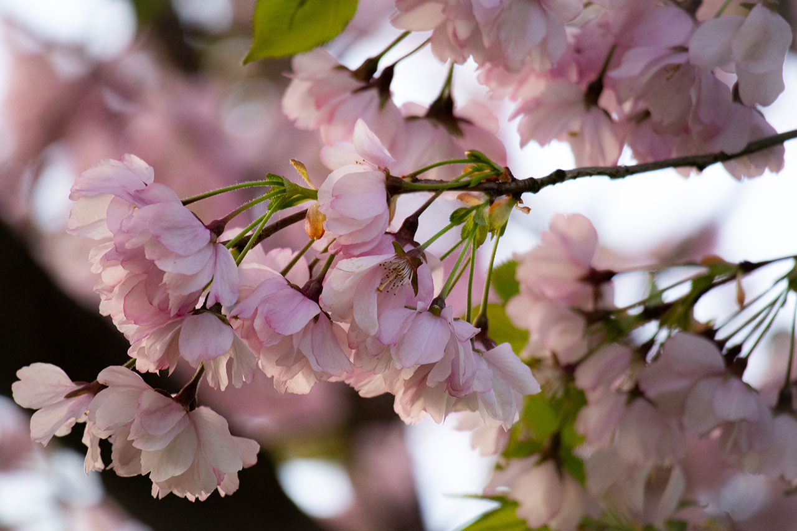
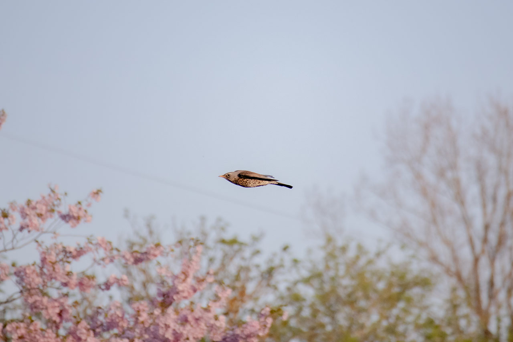
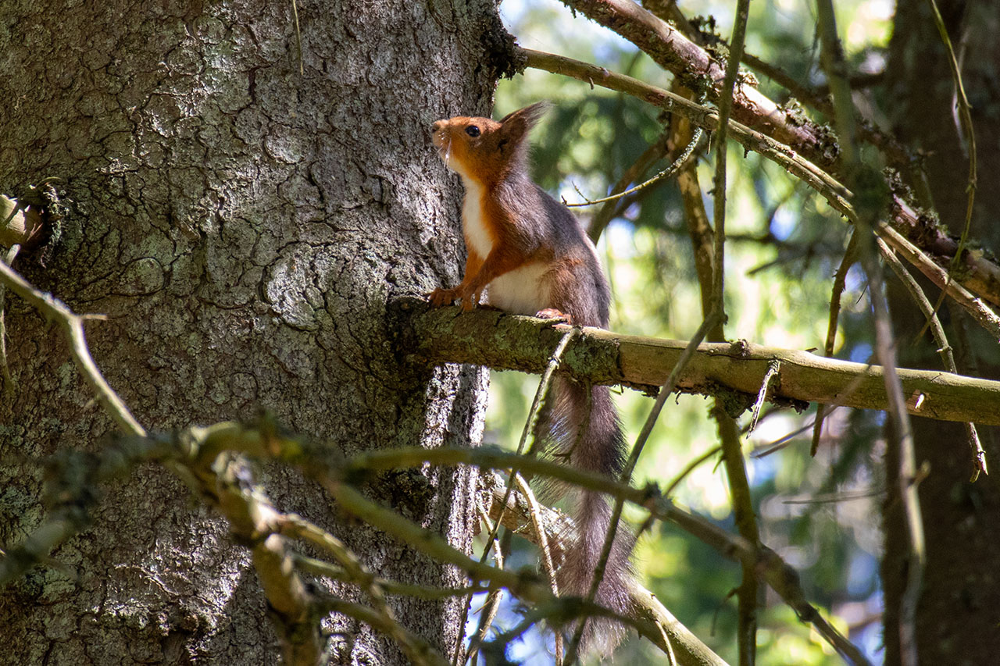
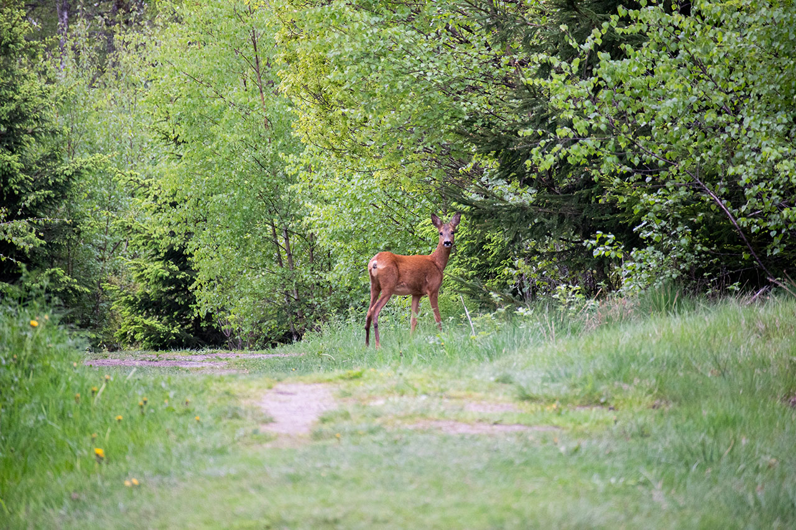
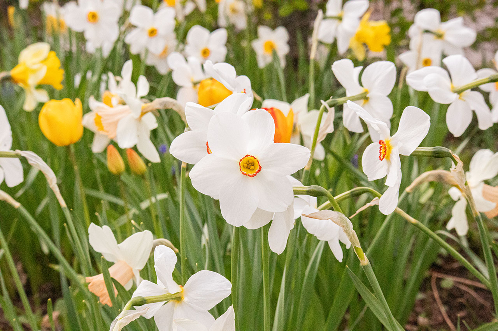
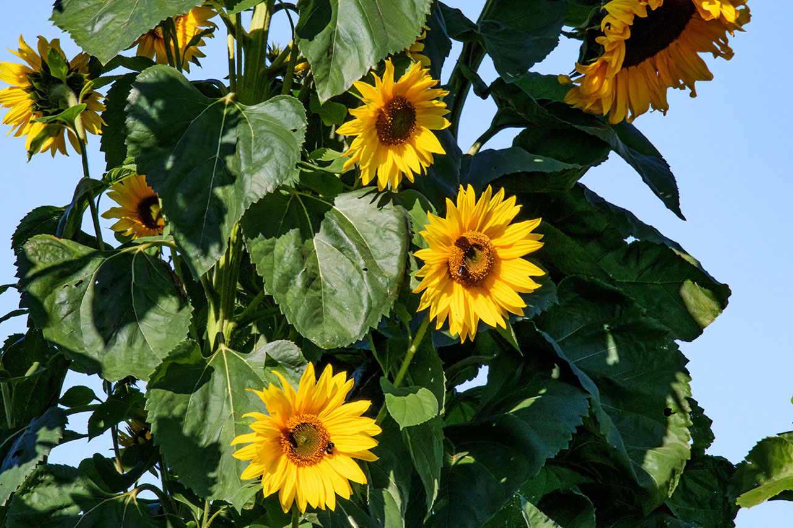
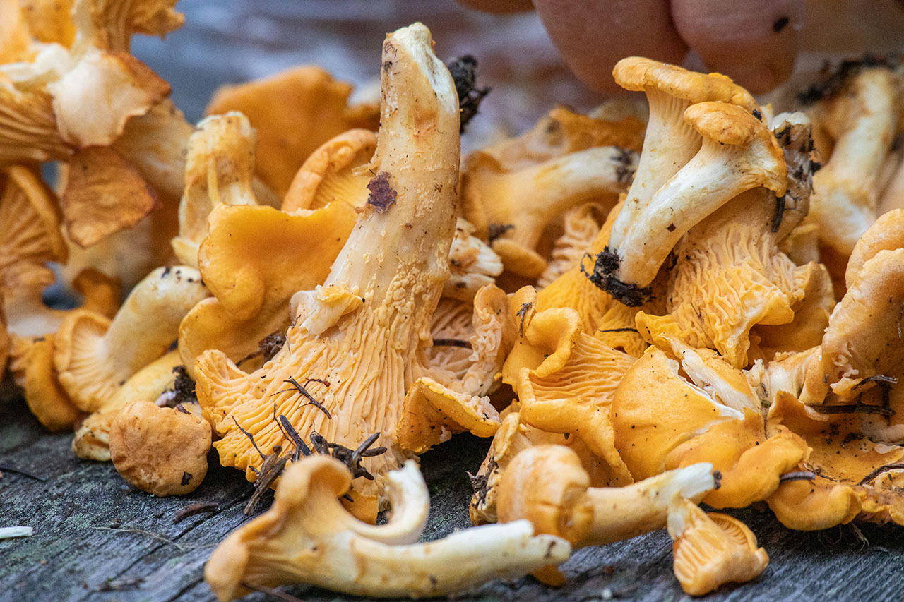
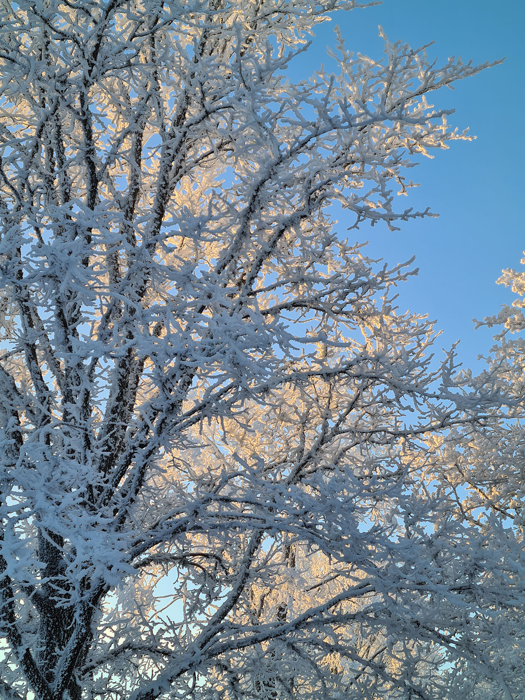

Hej! Jag heter Lo och jag älskar årstiderna! Det är så mysigt och häftigt att se hur årstiderna förändrar både natur och djur.
Våren är min favoritårstid, då blir det ljusare, varmare, all is smälter och alla djur vaknar upp
från sin långa vinter sömn. Efter våren tycker jag mest om hösten, efter den varma sommaren
är det skönt när det blir kallt och det blir så fint när alla löven ändrar färg!
Vilken är din favorit årstid?
Årstider med Lo
Vår
<
>
Träden knoppar

Fågel

Ekorre

Rådjur

Vårblomman vit Påsklilja

Här kan du läsa om min favoritårstid, våren. Och varför det är det ska jag nu berätta.
Under våren smälter all snö och is och djuren börjar vakna till igen! Fåglarna som har rest söder ut
börjar nu komma tillbaka och tänka sig att de kan hitta tillbaka! Dagarna blir också längre så jag hinner med mycket mer
lek!
Under våren börjar löven att knoppa, detta är första steget i att de växer mer och blir till ett löv!
Årstider med Lo
Sommar
<
>
Solrosor

Här kan du läsa mer om sommaren!
I Sverige är sommaren under månaderna juni, juli och augusti. På sommaren är det varmt och ljust
och man kan göra massa roliga aktiviteter! Som att bada, resa, äta glass eller plocka jordgubbar.
Djuren har fått sina ungar och alla löv på buskar och träd är så gröna! Det är vanligt att man firar midsommar under sommaren och
under sommaren är det perfekt att leka mycket ute!
Årstider med Lo
Höst
<
>
Kantareller

Nu ska du få lära dig mer om hösten!
På hösten blir det mörkare om dagarna och kallare temperatur.
Det är nu löven på träden ändrar färg, det som jag tycker är så fint att titta på!
Under hösten kommer de fina löven att ramla ner, men om man samlar ihop alla löv i en
lövhög kan man sedan hoppa i det och det är så roligt!
Man ska också passa på att gå ut i skogen, där finns det svamp och bär som man kan plocka!
Under hösten förbereder alla djur sig inför vintern, de samlar på sig mat och värmer upp
deras bon så de klarar sig under vintern då det är ännu kallare!
Årstider med Lo
Vinter
<
>
Snötäckta träd

Här kan du läsa mer om vinter!
När vintern kommer blir det mycket kallare än vad det är på hösten! Vi får klä oss med mycket
tjockare kläder för att hålla oss varma och jag älskar tjocka strumpor!
Nu på året brukar alla löv från alla träd ha ramlat av, men vissa träd och buskar som har barr
istället för löv de är fortfarande klädda!
Något många förknippar vinter med är snö! Ingenting slår när man tittar ut genom fönstret en morgon och allting
utanför ditt fönster är täckt med vit snö! Det är så roligt att leka i snön, man kan åka pulka ner för stora kullar och
det finns roliga vintersporter som skridskor eller skidor att testa på!
Efter att man har varit ute i det kalla en hel dag och bara lekt i snön är det så härligt att få komma in i
värmen och få dricka varm choklad!
Under vintern går många djur i ide. Alltså de går in i sina bon och lägger sig för att sova och sedna sover de
hela vintern lång. Alla djur går inte i ide, vissa fåglar flyger söder ut för att kunna bo i varmare temperaturer.
Årstider med Lo
Lek med Lo
Oj då! Alla äpplen faller när det är höst, hjälp mig att undvika äpplen
genom att skaka på din mobil eller surfplatta.